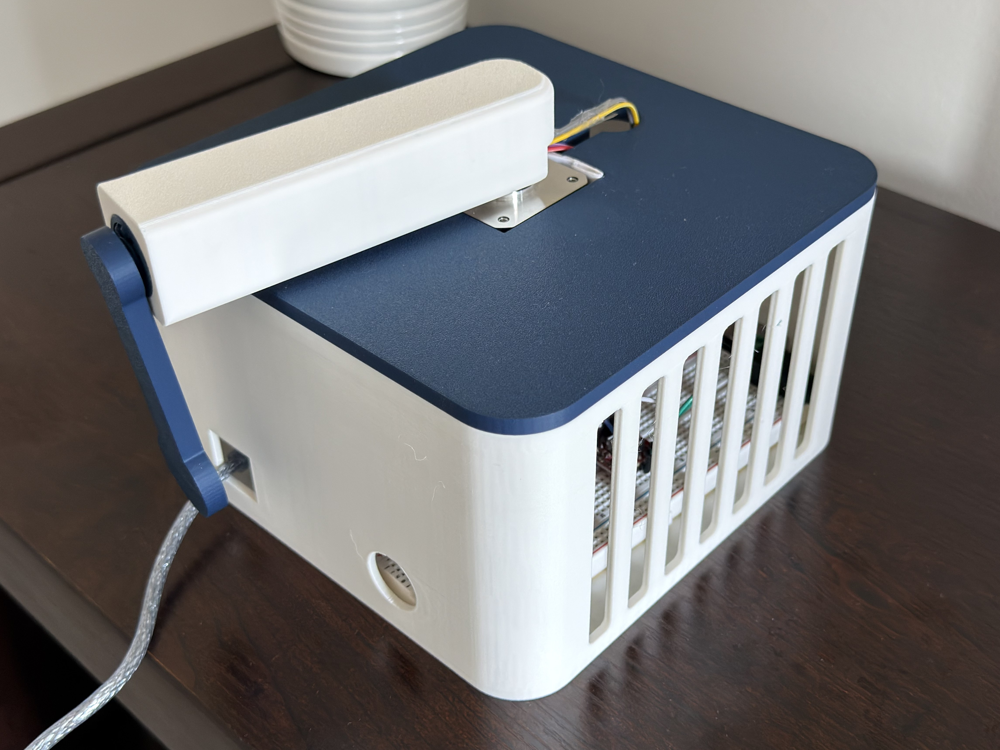
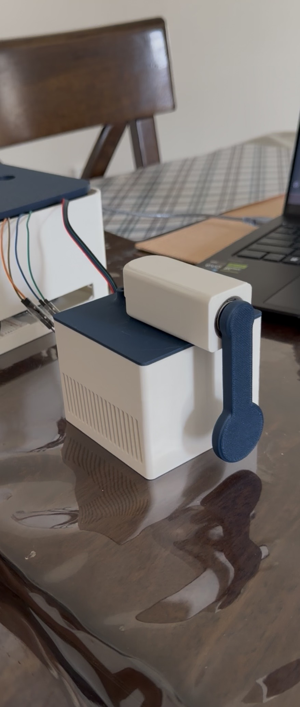
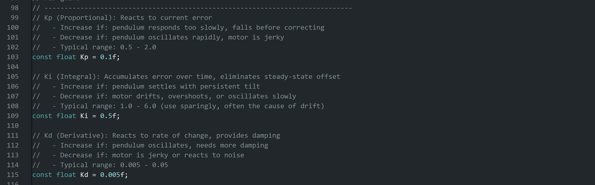
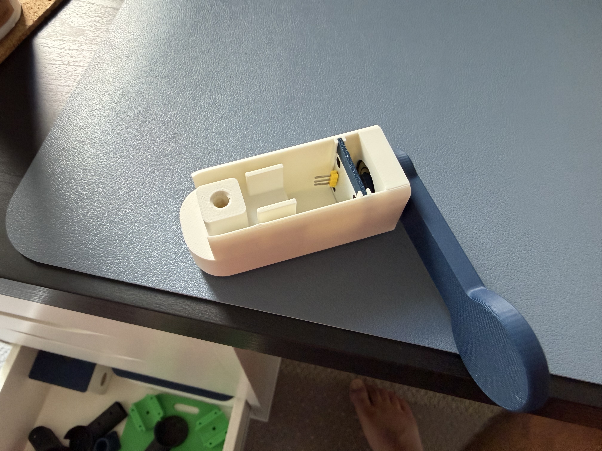
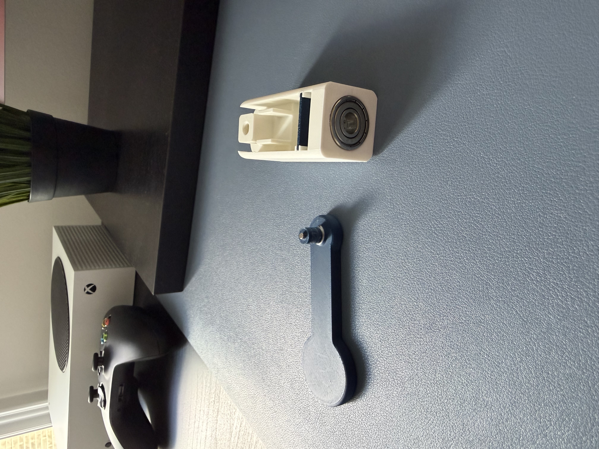
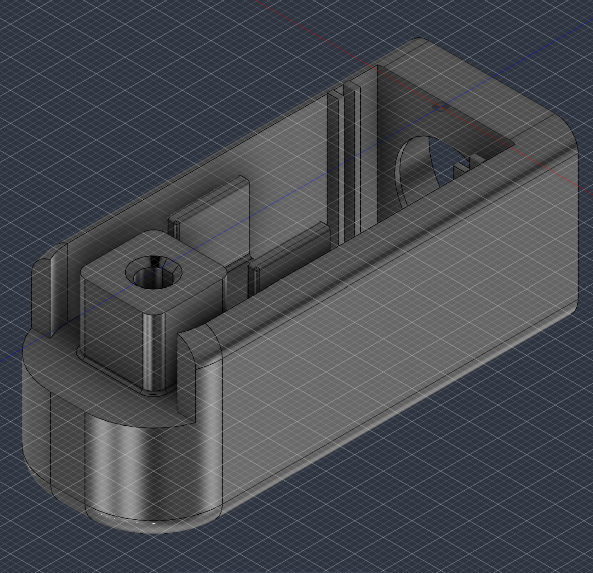

// PROJECT 02
Rotary inverted pendulum
Goal
For this project I just wanted some exposure to control theory, not just the version you get from reading about it. Rather than build something entirely from scratch, I found an open source project on GitHub and YouTube to follow as a starting point while still learning the fundamentals myself. In terms of the actual project goals it was simple (in practice); get the pendulum balancing properly on its own.
Process
I started by choosing the components I would need most of these choices came straight from the open source project's parts list and I had reasons for sticking with them rather than second guessing. For one, the NEMA 17 is a common stepper motor in 3D printers, which meant reliability and familiarity. The AS5600 is one of the cheapest magnetic encoders available but still fully capable for this project. Now the reason I picked this specific project over others is because it had the ability to run on custom specs and hardware rather than requiring an exact hardware match.
After parts selection I began designing the 3D-printed components in Fusion 360. I first designed the stepper housing before anything else, since I needed to confirm the motor could sit in place without excess vibration and the Arduino also needed to fit inside the enclosure. From there I built the arm (with space for a 8×22×7mm bearing) and base to house the electronics and route wiring to the AS5600 along with creating the pendulum with space to house a axially aligned diametric magnet.
Just because the project was open sourced didn't mean it came without issues. The first version I made ran into real problems. The footprint was too large, which caused the arm to slip during motor movement. For V2, I shrank the footprint and moved the Arduino, breadboard and motor driver outside the base entirely. Meaning the only things left inside were the motor, arm, pendulum, and wiring. I also had a fair amount of trouble soldering pins onto the AS5600, and only got it working reliably through repeated trial and error.
Tuning the actual control loop went better than expected. I confirmed early on, through tests without the arm attached that the motor was correcting pendulum movements like it was supposed to. It wasn't until I noticed how hot the motor was getting that I realized why the full assembly wasn't holding up the way the isolated tests suggested it should. That's where the thermal limitations of the PLA mount came into the picture. This is where I realized the actual problem wasn't the control logic, instead it was the hardware underneath it.


Outcome

Although I was unable to get the pendulum to balance vertically, I believe I was able to understand the control theory principles behind it and how it works. The fix is straightforward and already identified, so this project isn't really finished so much as paused at a clear next step.
Project gallery


